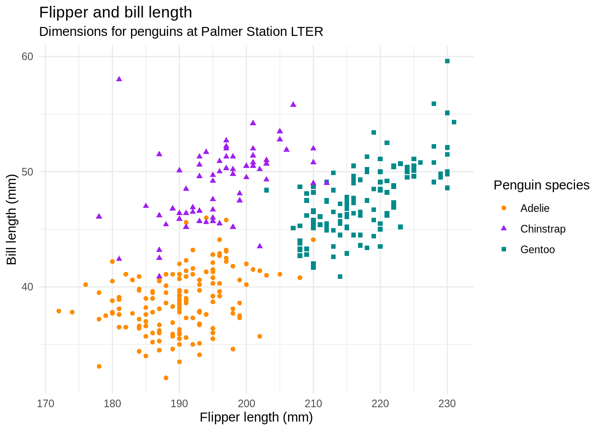
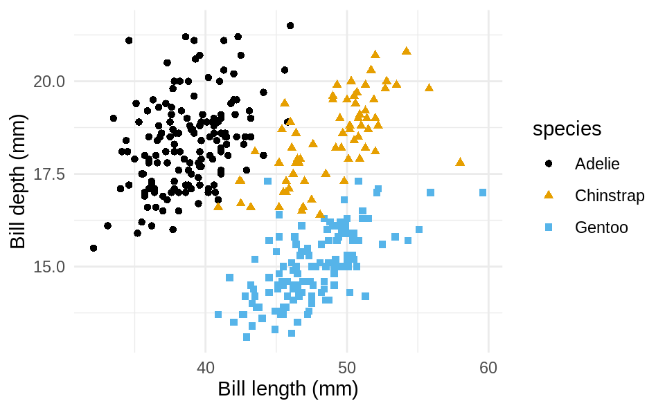
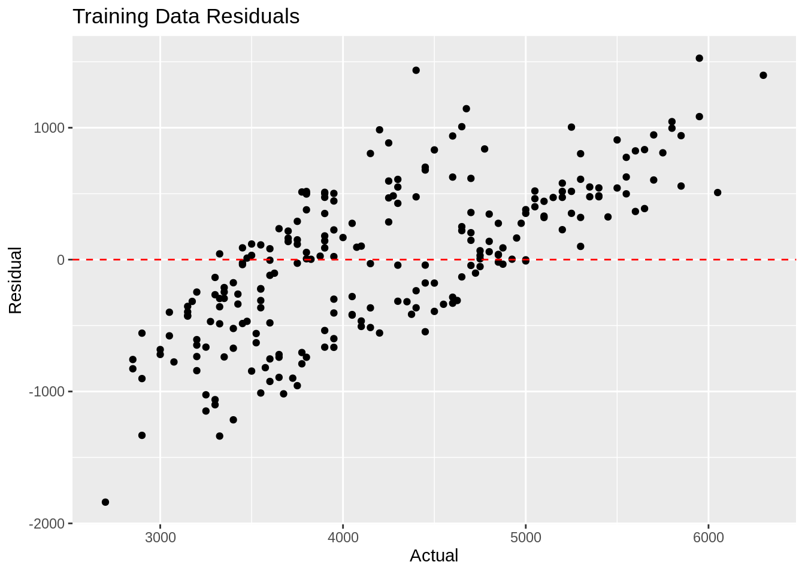
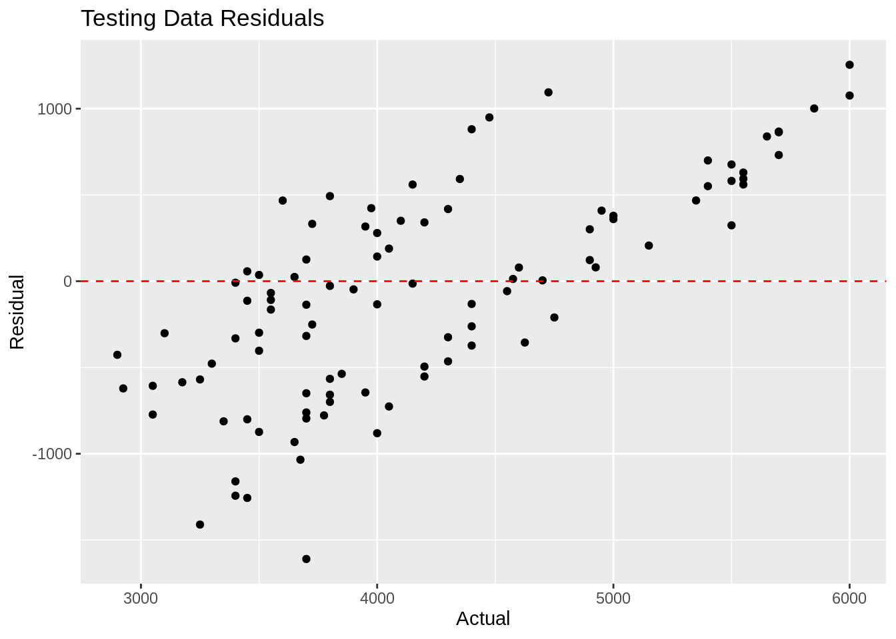

penguins <- as_tibble(penguins)Hello, Penguins
Introduction
I have been learning data science as a fellow of the Arewa Data Science Academy since January, 2023 and I have picked many skills. This is an attempt to practice quarto using the R programming language, in the RStudio IDE. I will work on the palmerpenguins dataset. Work in progress!
Data
For this analysis, we ’ll use the penguins dataset from the palmerpenguins package. (Gorman, Williams, and Fraser 2014)
Converting the dataset to a tibble for a more aesthetic display
glimpse(penguins)Rows: 344
Columns: 8
$ species <fct> Adelie, Adelie, Adelie, Adelie, Adelie, Adelie, Adel…
$ island <fct> Torgersen, Torgersen, Torgersen, Torgersen, Torgerse…
$ bill_length_mm <dbl> 39.1, 39.5, 40.3, NA, 36.7, 39.3, 38.9, 39.2, 34.1, …
$ bill_depth_mm <dbl> 18.7, 17.4, 18.0, NA, 19.3, 20.6, 17.8, 19.6, 18.1, …
$ flipper_length_mm <int> 181, 186, 195, NA, 193, 190, 181, 195, 193, 190, 186…
$ body_mass_g <int> 3750, 3800, 3250, NA, 3450, 3650, 3625, 4675, 3475, …
$ sex <fct> male, female, female, NA, female, male, female, male…
$ year <int> 2007, 2007, 2007, 2007, 2007, 2007, 2007, 2007, 2007…Getting summary statistics of the dataset using the summary function in base R
penguins %>% summary() species island bill_length_mm bill_depth_mm
Adelie :152 Biscoe :168 Min. :32.10 Min. :13.10
Chinstrap: 68 Dream :124 1st Qu.:39.23 1st Qu.:15.60
Gentoo :124 Torgersen: 52 Median :44.45 Median :17.30
Mean :43.92 Mean :17.15
3rd Qu.:48.50 3rd Qu.:18.70
Max. :59.60 Max. :21.50
NA's :2 NA's :2
flipper_length_mm body_mass_g sex year
Min. :172.0 Min. :2700 female:165 Min. :2007
1st Qu.:190.0 1st Qu.:3550 male :168 1st Qu.:2007
Median :197.0 Median :4050 NA's : 11 Median :2008
Mean :200.9 Mean :4202 Mean :2008
3rd Qu.:213.0 3rd Qu.:4750 3rd Qu.:2009
Max. :231.0 Max. :6300 Max. :2009
NA's :2 NA's :2 Exploring a bit more to see the initial few rows
penguins %>%
head() # A tibble: 6 × 8
species island bill_length_mm bill_depth_mm flipper_length_mm body_mass_g
<fct> <fct> <dbl> <dbl> <int> <int>
1 Adelie Torgersen 39.1 18.7 181 3750
2 Adelie Torgersen 39.5 17.4 186 3800
3 Adelie Torgersen 40.3 18 195 3250
4 Adelie Torgersen NA NA NA NA
5 Adelie Torgersen 36.7 19.3 193 3450
6 Adelie Torgersen 39.3 20.6 190 3650
# ℹ 2 more variables: sex <fct>, year <int>Meet Quarto
Quarto enables you to weave together content and executable code into a finished document. To learn more about Quarto see https://quarto.org.
Meet the penguins

The penguins data from the palmerpenguins package contains size measurements for 344 penguins from three species observed on three islands in the Palmer Archipelago, Antarctica.
The plot below shows the relationship between flipper and bill lengths of these penguins.

Species
Figure 1 is a scatter plot of species of penguins
ggplot(penguins,
aes(x=bill_length_mm, y= bill_depth_mm,color=species,shape=species)) + geom_point() + theme_minimal() + scale_color_colorblind() + labs( x = "Bill length (mm)", y = "Bill depth (mm)")Warning: Removed 2 rows containing missing values (`geom_point()`).
Penguins
Table 1 shows the first ten penguins from the dataset.
penguins %>%
slice_head(n=10) %>%
select(species,island,bill_length_mm,bill_depth_mm) %>%
gt()| species | island | bill_length_mm | bill_depth_mm |
|---|---|---|---|
| Adelie | Torgersen | 39.1 | 18.7 |
| Adelie | Torgersen | 39.5 | 17.4 |
| Adelie | Torgersen | 40.3 | 18.0 |
| Adelie | Torgersen | NA | NA |
| Adelie | Torgersen | 36.7 | 19.3 |
| Adelie | Torgersen | 39.3 | 20.6 |
| Adelie | Torgersen | 38.9 | 17.8 |
| Adelie | Torgersen | 39.2 | 19.6 |
| Adelie | Torgersen | 34.1 | 18.1 |
| Adelie | Torgersen | 42.0 | 20.2 |
Analysis
Check for missing values
missing_values <- penguins %>%
summarise(across(everything(), ~sum(is.na(.)))) # Calculate missing values for each variable
cat("Missing values:\n")Missing values:print(missing_values)# A tibble: 1 × 8
species island bill_length_mm bill_depth_mm flipper_length_mm body_mass_g
<int> <int> <int> <int> <int> <int>
1 0 0 2 2 2 2
# ℹ 2 more variables: sex <int>, year <int>Data Pre-processing
First we need to remove rows with missing values to enable easy and accurate modelling
# Remove rows with missing values
penguins <- penguins %>%
drop_na()Modelling
We begin by splitting the data into training and testing sets
# Split the data into training and testing sets
set.seed(123) # For reproducibility
split <- initial_split(penguins, prop = 0.7)
train_data <- training(split)
test_data <- testing(split)Then we build a simple linear regression model using tidymodels package
# Build a simple model using tidymodels
model <- linear_reg() %>%
set_engine("lm") %>%
set_mode("regression")
model_fit <- model %>%
fit(body_mass_g ~ bill_length_mm + bill_depth_mm, data = train_data)Then, we evaluate the model, testing it on the test data
# Model evaluation
train_predictions <- predict(model_fit, train_data) %>%
bind_cols(train_data)
test_predictions <- predict(model_fit, test_data) %>%
bind_cols(test_data)We then calculate the evaluation for and testing data
# Calculate evaluation metrics for training data
train_metrics <- train_predictions %>%
summarize(
rmse = sqrt(mean((body_mass_g - .pred)^2)),
r_squared = cor(body_mass_g, .pred)^2
)
cat("Training metrics:\n")Training metrics:print(train_metrics)# A tibble: 1 × 2
rmse r_squared
<dbl> <dbl>
1 578. 0.488# Calculate evaluation metrics for testing data
test_metrics <- test_predictions %>%
summarize(
rmse = sqrt(mean((body_mass_g - .pred)^2)),
r_squared = cor(body_mass_g, .pred)^2
)
cat("Testing metrics:\n")Testing metrics:print(test_metrics)# A tibble: 1 × 2
rmse r_squared
<dbl> <dbl>
1 616. 0.411Modelling Results
Here, I will show the plots for both the training and testing data
# Calculate residuals for training data
train_residuals <- train_predictions %>%
mutate(residual = body_mass_g - .pred)
# Create a scatter plot for training data residuals
ggplot(train_residuals, aes(x = body_mass_g, y = residual)) +
geom_point() +
geom_hline(yintercept = 0, linetype = "dashed", color = "red") +
labs(x = "Actual", y = "Residual", title = "Training Data Residuals")
For the testing data
# Calculate residuals for testing data
test_residuals <- test_predictions %>%
mutate(residual = body_mass_g - .pred)
# Create a scatter plot for testing data residuals
ggplot(test_residuals, aes(x = body_mass_g, y = residual)) +
geom_point() + geom_hline(yintercept = 0, linetype = "dashed", color = "red") + labs(x = "Actual", y = "Residual", title = "Testing Data Residuals")
Work in progress.
References
Gorman, Kristen B., Tony D. Williams, and William R. Fraser. 2014. “Ecological Sexual Dimorphism and Environmental Variability Within a Community of Antarctic Penguins (Genus Pygoscelis).” Edited by André Chiaradia. PLoS ONE 9 (3): e90081. https://doi.org/10.1371/journal.pone.0090081.